SixDOF Theory¶
Introduction¶
Note
Theory behind the rigid-body 6DOF model (WSF_RIGID_BODY_SIX_DOF_MOVER, WsfRigidBodySixDOF_Mover) is identical to that of the antecedent P6DOF, and can be studied via the P6DOF Theory article. When WSF_P6DOF_MOVER is removed, that document will be folded into this one.
The WSF_POINT_MASS_SIX_DOF_MOVER is intended to bridge the gap between 3DOF models such as WSF_GUIDED_MOVER and WSF_AIR_MOVER and full 6DOF models such as WSF_P6DOF_MOVER and WSF_RIGID_BODY_SIX_DOF_MOVER.
Where 3DOF models are required to assume elements of their orientation, a full 6DOF model will propagate orientation according to conservation of angular momentum (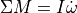). This approach is kinematically correct, but imposes data requirements which may not be practical. Specifically, the net moment requires accurate and timely knowledge of the distribution of force about the body, while the moment of inertia tensor requires knowledge of the of the distribution of mass throughout the body.
The PointMass SixDOF mover uses a effects-based system to estimate , composed as much as possible by rotation data that can be directly measured or assumed. Like similar models, the aerodynamic force coefficients for a PM6DOF model should represent a trim (zero net moment) state for a given airspeed and angle of attack. Rotation rates are either commanded by the active pilot (human-in-the-loop or otherwise) or are generated to mimic the effects of aerodynamic stability or instability.
Thrust magnitude calculations are identical to that used for the RigidBody model, but the nature of the kinematic model requires that thrust vectoring must also be effects-based. Additionally, thrust reversal is not currently considered for PointMass vehicles.
List of Symbols¶
Symbol |
Definition |
SixDOF Command |
SixDOF Script Method |
|---|---|---|---|
|
angle of attack |
||
|
angle of side slip |
||
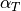 |
total angle of attack |
||
|
Mach number |
||
|
time |
||
|
body roll rate |
||
|
body pitch rate |
||
|
body yaw rate |
||
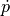 |
body roll acceleration |
||
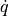 |
body pitch acceleration |
||
body yaw acceleration |
|||
rotational velocity vector |
|||
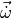 |
rotational acceleration vector |
||
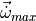 |
total limit of angular acceleration from controls |
||
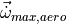 |
limit of angular acceleration from aerodynamic controls |
||
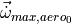 |
value of |
||
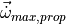 |
limit of angular acceleration from propulsive controls |
||
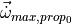 |
value of 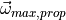 at dry weight |
||
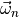 |
natural frequency of the stabilizing aerodynamic response |
||
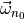 |
value of at dry weight under standard sea-level conditions |
||
|
current mass |
||
empty mass |
|||
|
moment of inertia matrix |
moment_of_inertia_ixx, moment_of_inertia_iyy, moment_of_inertia_izz |
|
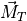 |
total moment |
||
|
engine thrust, dependent on the engine type |
||
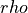 |
density of the atmosphere at the vehicle’s current altitude |
||
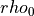 |
standard density of the atmosphere at the ellipsoid surface |


 at dry weight under standard sea-level conditions
at dry weight under standard sea-level conditions


Equations of Motion¶
As with the rigid-body models, linear motion is a second-order integral of acceleration, calculated according to conservation of momentum ((1)).
Orientation is similarly a second-order integral of angular acceleration, but unlike the rigid-body models, there is no real consideration for angular momentum in the PointMass mover - angular acceleration is simply built up by control capabilities and (de-)stabilizing effects.
The P6DOF Theory document contains an in-depth discussion of how these differential equations are integrated (see Equations of Motion), and we will not duplicate that here.
Control Forces and Rotation¶
While the forces on a PM6DOF are summed in the same way as for an RB6DOF, the angular acceleration is built up in a way that abstracts away the actual torques on the vehicle.
Control response data does not need to be supplied for unguided munitions (bombs, rockets, decoys), but is required for a vehicle to be guided or piloted. Baseline angular acceleration limits are provided in user-defined tables with respect to Mach number, then modified to account for air density and angle-of-attack effects. The angular acceleration tables should be informed by reference data for the vehicle or class of vehicle, but can also be estimated kinematically.
As an example, consider a description of a reasonable fighter which specifies an ability at Mach 0.8 to accelerate from wings-level to a roll rate of 180 deg/s within one second. In this case, the peak acceleration should be specified at least 180 deg/s/s at Mach 0.8 - possibly higher to account for altitude and any stabilizing effects (see Stabilizing Rotation Effects below).
Note
How this changes with respect to Mach will vary per vehicle type, but a reasonable first-pass strategy is to scale the acceleration limit with the square of Mach, remembering that aerodynamic torques scale with the square of speed. Shifts in center of pressure or controllers which back down control authority into the transonic and supersonic regimes can be approximated by reducing maximum acceleration down from this initial estimate at those Mach numbers.
(1)¶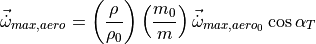
These corrections account for reduced control efficacy at higher altitudes and at higher slip angles, and for changes in inertia as mass is added or removed.
A separate, second term is added to account for the effects of thrust vectoring given some amount of thrust.
(2)¶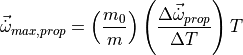
Thrust itself is modeled as a function of altitude, so additional altitude effects are not considered. To account for increased agility as fuel is burned away, a mass factor is introduced.
(3)¶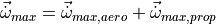
The stick-and-rudder flight controls on a PM6DOF are mapped directly to rotational rate commands. This map is a 1D table defined by the user in script, which allows for linear or nonlinear mappings. The rotational rate commands are achieved via a linear ramp, with a slope limited by the angular acceleration limit.
(4)¶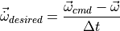
Stabilizing Rotation Effects¶
The impact of the stabilizing effect is most obvious on unguided projectiles. By default, a PM6DOF vehicle has no tendency to change its rotation rate absent some action by a pilot. This includes pointing into the wind, or “weathervaning.”
This effect can be introduced by adding tables that specify a baseline stabilizing frequency as a function of Mach number. These frequencies specify the critically damped system response of an uncontrolled vehicle as it returns to equilibrium. Currently, equilibrium states are 0 degrees angle-of-attack for the pitch axis, 0 degrees sideslip for the yaw axis, and 0 deg/s roll rate for the roll axis. Settings may be introduced in future releases to allow for modifications to the equilibrium state such as a nonzero angle of attack for aircraft, or a specified spin rate for projectiles.
As with the control acceleration data, the input parameters are modified to account for changes in loadout and operating air density.
(5)¶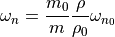
The response frequency is then translated into a rotational acceleration for the pitch and yaw axes:
(6)¶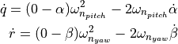
For the roll axis, we are affecting rotation rate rather than rotation, so a first-order lag system is employed:
(7)¶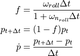
To avoid overshoot and numerical instability, these accelerations are limited based on kinematic extrapolations:
(8)¶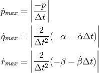
The final rotational acceleration for a PM6DOF is the sum of the control acceleration and stabilizing accelerations.